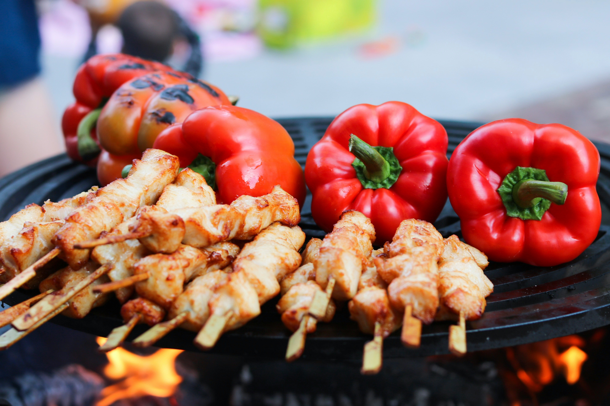

Chicken Skewers

"What we are going to decide right now, is what is better: chicken or fish" -- Gerard Way
The illusion of choice is a prominent concept in the country of Draag. And, while they may be the biggest exporter of wheat, they are also known for their chicken and fish. Recently during their tour with The Black Parade, Draag used Chicken and Fish signs in an interactive moment with the crowd. Here is an easy recipe for Draag Chicken Skewers!
Ingredients
- 4 Bonelews, skinless chicken breasts or thighs, sliced
- 1.5 Tbsp oregano powder
- 1 Tbsp smoked paprika
- 1.5 Tbsp salt
- 3/4 Tsp ground pepper
- 1/2 Cup honey
- 2 Tbsp apple cider vinegar
Instructions
- In a container with a lid, mix oregano, paprika, salt, pepper, honey, and vinegar
- Add chicken, sliced into thin strips and close, and close lid
- Toss container to mix chicken and toppings
- Keep covered and place in refrigerator to marinate for at least one hour
- Thread the chicken strips onto skewers
- Cook skewers on grill or bake until chicken is cooked all the way
- Enjoy!
Inspired by Adams Farms' recipe